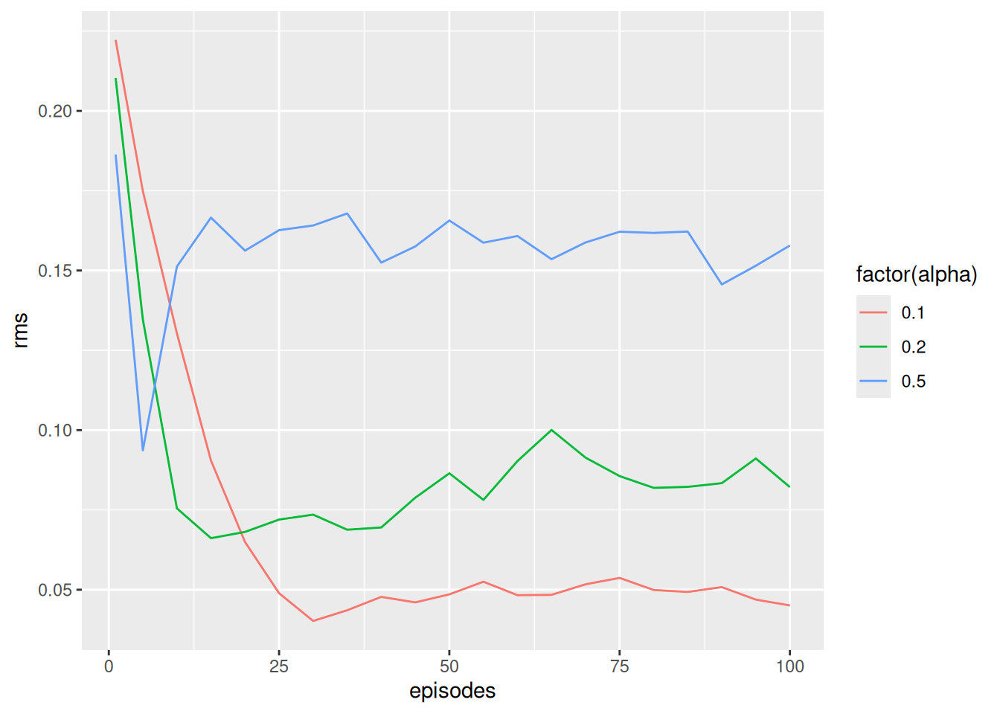

Module 7 Temporal difference methods for prediction
One of the most fundamental concepts in reinforcement learning is temporal difference (TD) learning. TD learning is a combination of Monte Carlo (MC) and dynamic programming (DP) ideas: Like MC, TD can predict using a model-free environment and learn from experience. Like DP, TD update estimates based on other learned estimates, without waiting for a final outcome (bootstrap). That is, TD can learn on-line and do not need to wait until the whole sample-path is found. TD is in general learn more efficiently than MC due to bootstrapping. In this module prediction using TD is considered.
7.1 Learning outcomes
By the end of this module, you are expected to:
- Describe what Temporal Difference (TD) learning is.
- Formulate the incremental update formula for TD learning.
- Define the temporal-difference error.
- Interpret the role of a fixed step-size.
- Identify key advantages of TD methods over DP and MC methods.
- Explain the TD(0) prediction algorithm.
- Understand the benefits of learning online with TD compared to MC methods.
The learning outcomes relate to the overall learning goals number 3, 4, 6, 9, and 12 of the course.
7.2 Textbook readings
For this week, you will need to read Chapter 6-6.3 in Sutton and Barto (2018). Read it before continuing this module. A summary of the book notation can be seen here.
7.3 What is TD learning?
Given a policy \(\pi\), we want to estimate the state-value function. Recall that the state value function is \[ v_\pi(s) = \mathbb{E}_\pi[G_t | S_t = s]. \] where the return is \[ G_t = R_{t+1} + \gamma R_{t+2} + \gamma^2 R_{t+3} + \cdots = \sum_{k=0}^{\infty} \gamma^k R_{t+k+1} = R_{t+1} + \gamma G_{t+1} \]
Let \(V\) denote the state-value estimate. Under MC prediction we used an incremental update formula: \[ V(S_t) \leftarrow V(S_t) + \alpha_n\left[G_t - V(S_t)\right], \] where \(n\) denote the number of observations and \(\alpha_n\) the step-size. Different values of \(\alpha_n\) was discussed in Module 6. Here we assumed a stationary environment (state set, transition probabilities etc. is the same for each stage \(t\)) e.g. for the sample average \(\alpha_n = 1/n\). If the environment is non-stationary (e.g. transition probabilities change over time) then a fixed step-size may be appropriate. Let us for the remaining of this module consider a non-stationary process with fixed step-size: \[ V(S_t) \leftarrow V(S_t) + \alpha\left[G_t - V(S_t)\right], \]
Note as pointed out in Section 2.5, a fixed step-size corresponds to a weighted average of the past observed returns and the initial estimate of \(S_t\): \[ \begin{align} V_{n+1} &= V_n +\alpha \left[G_n - V_n\right] \nonumber \\ &= \alpha G_n + (1 - \alpha)V_n \nonumber \\ &= \alpha G_n + (1 - \alpha)[\alpha G_{n-1} + (1 - \alpha)V_{n-1}] \nonumber \\ &= \alpha G_n + (1 - \alpha)\alpha G_{n-1} + (1 - \alpha)^2 V_{n-1} \nonumber \\ & \vdots \nonumber \\ &= (1-\alpha)^n V_1 + \sum_{i=1}^{n} \alpha (1 - \alpha)^{n-i} G_i \\ \end{align} \] That is, a larger weight is used for recent observations compared to old observations.
For MC prediction we needed the sample path to get the realized return \(G_t\). However, since \[ \begin{align} v_\pi(s) &= \mathbb{E}_\pi[G_t | S_t = s] \\ &= \mathbb{E}_\pi[R_{t+1} + \gamma G_{t+1} | S_t = s] \\ &= \mathbb{E}_\pi[R_{t+1}| S_t = s] + \gamma \mathbb{E}_\pi[G_{t+1} | S_t = s] \\ &= \mathbb{E}_\pi[R_{t+1}| S_t = s] + \gamma v_\pi(S_{t+1}), \end{align} \] then, given a realized reward \(R_{t+1}\), an estimate for the return \(G_t\) is \(R_{t+1} + \gamma V(S_{t+1})\) and the incremental update becomes: \[ V(S_t) \leftarrow V(S_t) + \alpha\left[R_{t+1} + \gamma V(S_{t+1}) - V(S_t)\right]. \tag{7.1} \] As a result, we do not have to generate a whole sample-path (as for MC) for updating the state-value estimate of \(s = S_t\) to \(V(S_t)\). Instead we only have to wait until the next state is observed and update the estimate of \(S_t\) given the estimate of the next state \(S_{t+1}\). As the estimate of \(S_{t+1}\) improve the estimate of \(S_t\) also improve. The incremental update in Eq. (7.1) is called TD(0) or one-step TD because it use a one-step lookahead to update the estimate. Note updating the estimates using TD resembles the way we did for DP: \[ V(s = S_t) \leftarrow \sum_{a \in \mathcal{A}}\pi(a | s)\left( r(s,a) + \gamma\sum_{s' \in \mathcal{S}} p(s' | s, a) V(s')\right) \] Here we updated the value by considering the expectation of all the next states. This was possible since we had a model. Now, by using TD, we do not need a model to estimate the state-value.
The term \[ \delta_t = R_{t+1} + \gamma V(S_{t+1}) - V(S_t), \] is denoted the temporal difference error (TD error) since it is the difference between the current estimate \(V(S_t)\) and the better estimate \(R_{t+1} + \gamma V(S_{t+1})\).
7.4 TD prediction
We can now formulate a TD(0) algorithm for predicting state-values of a policy (see Figure 7.1). No stopping criterion is given but could stop when small differences in state-values are observed.
![TD(0) policy prediction [@Sutton18].](img/td0-pred.png)
Figure 7.1: TD(0) policy prediction (Sutton and Barto 2018).
The algorithm is given for a process with episodes; however, also works for continuing processes. In this case the inner loop runs over an infinite number of time-steps.
7.4.1 TD prediction for action-values
Later we will use TD to for improving the policy (control). Since we do not have a model we need to estimate action-values instead and the optimal policy can be found using \(q_*\) (see Eq. (4.3)). To find \(q_*\), we first need to predict action-values for a policy \(\pi\) and the incremental update Eq. (7.1) must be modified to use \(Q\) values: \[ Q(S_t, A_t) \leftarrow Q(S_t, A_t) + \alpha\left[R_{t+1} + \gamma Q(S_{t+1}, A_t) - Q(S_t, A_t)\right]. \]
Note given a policy \(\pi\) you need to know \(S_t, A_t, R_{t+1}, S_{t+1}, A_{t+1}\) or short SARSA before you can make an update. This acronym is used to name the SARSA algorithm for control in Module 8. Note to ensure exploration of all action-values we need e.g. an \(\epsilon\)-soft behavioural policy.
7.5 Benefits of TD methods
Let us try to summarize the benefits of TD prediction
- TD methods do not require a model of the environment (compared to DP).
- TD methods can be implemented online, which can speed convergence (compared to MC methods which must wait until the end of the sample-path).
- TD methods learn from all actions, whereas MC methods require the sample-path to have a tail equal to the target policy.
- TD methods do converge on the value function with a sufficiently small step-size parameter, or with a decreasing step-size.
- TD methods generally converge faster than MC methods, although this has not been formally proven.
- TD methods are extremely useful for continuing tasks that cannot be broken down into episodes as required by MC methods.
- TD can be seen as a method for prediction learning where you try to predict what happens next given you current action, get new information and make a new prediction. That is, you do not need a training set (as in supervised learning) instead the reward signal is observed as time goes by.
- TD methods are good for sequential decision problems (multi-step prediction).
- TD methods are scalable in the sense that computations do not grow exponentially with the problem size.
An example illustrating that TD methods converge faster than MC methods is given in Exercise 7.6.1
7.6 Exercises
Below you will find a set of exercises. Always have a look at the exercises before you meet in your study group and try to solve them yourself. Are you stuck, see the help page. Sometimes solutions can be seen by pressing the button besides a question. Beware, you will not learn by giving up too early. Put some effort into finding a solution!
7.6.1 Exercise - A randow walk
Consider a MDP with states 2-6 and two terminal states 1 and 7. Possible transitions are given in Figure 7.2. All episodes start in the centre state, 4, then proceed either left or right by one state on each step. We assume the stochastic policy \(\pi\) is used where each direction has equal probability. Episodes terminate either on the left (1) or the right (7). When an episode terminates on the right, reward of 1 occurs; all other rewards are zero. If the discount factor equals 1, the state-value of each state is the probability of terminating on the right if starting from that state.

Figure 7.2: Possible transitions between states and rewards.
- Formulate the MDP model and calculate the state-value \(v_\pi\) for each state using the Bellman equations (5.1). Hint: there is no need to code this. Just solve the Bellman equations for state 2-6.
- Consider the code below which build, set the policy and evaluate it. Try to understand what happens and check if the results are the same as found in Question 1.
## Build the MDP
mdp <- MDPClass$new()
mdp$addStateSpace(1:7) # add state keys
states <- str_c(2:6)
for (s in states) {
mdp$addActionSpace(s, c("left", "right"))
}
mdp$addActionSpace("1", c("dummy"))
mdp$addActionSpace("7", c("dummy"))
# Add trans pr and rewards
pr <- 1
for (s in 2:5) {
names(pr) = s+1
mdp$addAction(as.character(s), "right", r = 0, pr)
}
mdp$addAction("6", "right", r = 1, pr = c("7" = 1))
for (s in 2:6) {
names(pr) = s-1
mdp$addAction(as.character(s), "left", r = 0, pr)
}
mdp$addAction("1", "dummy", r = 0, pr = c("1" = 1))
mdp$addAction("7", "dummy", r = 0, pr = c("7" = 1))
mdp$getActionInfo("1")
#> $dummy
#> $dummy$r
#> [1] 0
#>
#> $dummy$pr
#> 1
#> 1
mdp$getActionInfo("2")
#> $right
#> $right$r
#> [1] 0
#>
#> $right$pr
#> 3
#> 1
#>
#>
#> $left
#> $left$r
#> [1] 0
#>
#> $left$pr
#> 1
#> 1
mdp$getActionInfo("6")
#> $right
#> $right$r
#> [1] 1
#>
#> $right$pr
#> 7
#> 1
#>
#>
#> $left
#> $left$r
#> [1] 0
#>
#> $left$pr
#> 5
#> 1
mdp$getActionInfo("7")
#> $dummy
#> $dummy$r
#> [1] 0
#>
#> $dummy$pr
#> 7
#> 1
## Set the policy
pi = c("left" = 0.5, "right" = 0.5)
mdp$setPolicy(states, pi)
pi = c("dummy" = 1)
mdp$setPolicy(c("1", "7"), pi)
mdp$getPolicy()
#> # A tibble: 12 × 3
#> state action pr
#> <chr> <chr> <dbl>
#> 1 1 dummy 1
#> 2 2 left 0.5
#> 3 2 right 0.5
#> 4 3 left 0.5
#> 5 3 right 0.5
#> 6 4 left 0.5
#> 7 4 right 0.5
#> 8 5 left 0.5
#> 9 5 right 0.5
#> 10 6 left 0.5
#> 11 6 right 0.5
#> 12 7 dummy 1
## Evaluate the policy
mdp$policyEval(gamma = 1)
mdp$getStateValues()
#> # A tibble: 7 × 2
#> state v
#> <chr> <dbl>
#> 1 1 0
#> 2 2 0.167
#> 3 3 0.333
#> 4 4 0.500
#> 5 5 0.667
#> 6 6 0.833
#> 7 7 0- Consider an episode with sequence \(4, 0, 3, 0, 2, 0, 1\). Let the initial state-value estimates of state 2-6 be 0.5 and update the state-values using TD(0) with \(\alpha = 0.1\). It appears that only \(V(2)\) change why was only the estimate for this one state changed? By exactly how much was it changed?
- Generate 100 episodes and run the TD(0) prediction algorithm with \(\alpha = 0.1\) (see Figure 7.1). Make a plot of the state-value estimate (y-axis) given state 2-6 (x-axis) for TD(0) running for 1, 10 and 100 episodes. You may use the code below as a starting point.
First we need an environment representing the problem
library(R6)
library(hash)
library(tidyverse)
#' R6 Class representing the RL environment for the problem
RLEnvRandom <- R6Class("RLEnvRandom",
public = list(
#' @description Return all states (keys).
getStates = function() {
return(str_c(1:7))
},
#' @description Return all actions (keys) for a state.
#' @param s State considered.
getActions = function(s) {
if (s == "1" | s == "7") return("dummy")
return(c("left", "right"))
},
#' @description Returns an episode as a tibble with cols s, a, r (last col the terminal reward).
#' @param agent The agent that holds the model with current policy stored in pi.
getEpisodePi = function(agent, startState) {
if (startState == "1" | startState == "7") {
return(tibble::tibble(!!!c("s", "a", "r"), .rows = 0)) # empty tibble
}
s <- as.numeric(startState)
df <- tibble(s = rep(NA_character_, 1000), a = NA_character_, r = NA_real_) # a tibble with more rows than used
for (i in 1:nrow(df)) {
if (s == 1 | s == 7) {
df <- df[1:(i-1),] # remove unused rows
break # have reached terminal state
}
r <- 0
a <- agent$getActionPi(str_c(s))
if (s == 6 & a == "right") r = 1
df$s[i] <- s
df$a[i] <- a
df$r[i] <- r
if (a == "right") s <- s + 1
if (a == "left") s <- s - 1
}
return(df)
},
#' @description Returns next state and reward given current state and action in a list (with names `r` and `sN`).
#' @param s Current state.
#' @param a Current action.
getTimeStepData = function(s, a) {
s <- as.numeric(s)
if (a == "left" & s > 1 & s < 7) return(list(r = 0, sN = as.character(s-1)))
if (a == "right" & s > 1 & s < 7) {
if (s == 6) return(list(r = 1, sN = as.character(s+1)))
return(list(r = 0, sN = as.character(s+1)))
}
if ((s == 1 | s == 7) & a == "dummy") return(list(r = 0, sN = NA_character_))
stop("Error finding next state and reward!")
}
)
)
env <- RLEnvRandom$new()
env$getTimeStepData("3", "right")
#> $r
#> [1] 0
#>
#> $sN
#> [1] "4"
env$getTimeStepData("1", "dummy")
#> $r
#> [1] 0
#>
#> $sN
#> [1] NA
env$getTimeStepData("6", "right")
#> $r
#> [1] 1
#>
#> $sN
#> [1] "7"Note we define a method getTimeStepData that takes a state and action and return the reward and next state. This method is used by the RL agent class in method policyEvalTD0:
library(R6)
library(hash)
library(tidyverse)
## Generic RL agent for tabular data (R6 class)
RLAgent <- R6Class("RLAgent",
public = list(
#' @field model The model is used to represent the information we have. The
#' model is represented using a hash list for the states. Each states contains
#' - A list with `actions` (a hash #' list with actions).
#' - `pi` (a named vector with policy pr (only positive values).
#' - `piG` the greedy action (a string).
#' - `n` a visit counter
#' The `actions` hash list contains
#' - The action-values `q`.
#' - `n` a visit counter.
model = NULL,
#' @description Create an object (when call new).
initialize = function() {
self$model <- hash()
return(invisible(NULL))
},
#' @description Add state and action to the hash (only if not already added)
#' @param s State key/string.
#' @param a Action key/string.
addStateAction = function(s, a) {
if (!has.key(s, self$model)) addStates(s)
if (!has.key(a, self$model[[s]]$actions)) self$model[[s]]$actions[[a]] <- list(q = 0, n = 0)
return(invisible(NULL))
},
#' @description Add the states (keys) and define void policy and empty action hash.
#' @param states A vector of states (converted to strings).
addStates = function(states) {
keys <- make.keys(states)
self$model[keys] <- list(pi = NA) # don't use pi = NULL since then won't be defined
for (s in keys) {
self$model[[s]]$v <- NA
self$model[[s]]$actions <- hash()
self$model[[s]]$n <- 0 # counter visited
}
return(invisible(NULL))
},
#' @description Add the actions to a state
#' @param s State (key).
#' @param actions A vector of actions (converted to strings).
addActions = function(s, actions) {
keys <- make.keys(actions)
for (a in keys) {
self$addStateAction(s, a)
}
return(invisible(NULL))
},
#' @description Add states and actions to the hash with initial values. If already exists nothing happens.
#' @param df A tibble with string columns `s` (states) and `a` (actions).
addStatesAndActions = function(df) {
for (i in 1:nrow(df)) {
self$addStateAction(df$s[i], df$a[i])
}
return(invisible(NULL))
},
#' @description Set the action-values for all actions.
#' @param value The value.
setActionValue = function(value = 0) {
for (s in keys(self$model)) {
for (a in keys(self$model[[s]]$actions)) {
self$model[[s]]$actions[[a]]$q = value
}
}
return(invisible(NULL))
},
#' @description Set the state-value of states
#' @param states A vector of states.
#' @param value The value.
setStateValue = function(states = keys(self$model), value = 0) {
for (s in states) {
self$model[[s]]$v <- value
}
return(invisible(NULL))
},
#' @description Set the action visit counter values for all actions.
#' @param ctrValue Counter value.
setActionCtrValue = function(ctrValue = 0) {
for (s in keys(self$model)) {
for (a in keys(self$model[[s]]$actions)) {
self$model[[s]]$actions[[a]]$n = ctrValue
}
}
return(invisible(NULL))
},
#' @description Set the action-values for a single action (including the counter values).
#' @param value The value.
#' @param ctrValue Counter value.
setActionValueSingle = function(value = 0, ctrValue = 0, s, a) {
self$model[[s]]$actions[[a]]$q = value
self$model[[s]]$actions[[a]]$n = ctrValue
return(invisible(NULL))
},
#' @description Set the policy to a random epsilon-greedy policy.
#' @param eps Epsilon used in epsilon-greedy policy.
setRandomEpsGreedyPolicy = function(eps) {
states <- keys(self$model)
for (s in states) {
actions <- self$getActionKeys(s)
self$model[[s]]$pi <- rep(eps/length(actions), length(actions))
names(self$model[[s]]$pi) <- actions
piG <- sample(self$getActionKeys(s), 1)
self$model[[s]]$pi[piG] <- self$model[[s]]$pi[piG] + 1 - eps
}
return(invisible(NULL))
},
#' @description Set the policy to the optimal epsilon-greedy policy
#' @param eps Epsilon used in epsilon-greedy policy.
#' @param states States under consideration.
setEpsGreedyPolicy = function(eps, states) {
for (s in states) {
actions <- self$getActionKeys(s)
self$model[[s]]$pi <- rep(eps/length(actions), length(actions))
names(self$model[[s]]$pi) <- actions
idx <- nnet::which.is.max(unlist(values(self$model[[s]]$actions)["q",])) # choose among max values at random
# idx <- which.max(unlist(values(self$model[[s]]$actions)["q",])) # choose first max
# self$model[[s]]$piG <- actions[idx]
self$model[[s]]$pi[idx] <- self$model[[s]]$pi[idx] + 1 - eps
}
return(invisible(NULL))
},
#' @description Set the greedy policy based on action-values.
#' @param states States under consideration.
setGreedyPolicy = function(states = self$getStateKeys()) {
for (s in states) {
pi <- 1
actions <- self$getActionKeys(s)
# idx <- nnet::which.is.max(unlist(values(self$model[[s]]$actions)["q",])) # choose among max values at random
idx <- which.max(unlist(values(self$model[[s]]$actions)["q",])) # choose first max
names(pi) <- actions[idx]
self$model[[s]]$pi <- pi
}
return(invisible(NULL))
},
#' @description Set the policy to the named vector pi for a set of states
#' @param states States under consideration.
#' @param pi A named vector with policy pr (only psitive values).
setPolicy = function(states, pi) {
for (s in states) {
self$model[[s]]$pi <- pi
}
return(invisible(NULL))
},
#' @description Set the state visit counter values for all states.
#' @param ctrValue Counter value.
setStateCtrValue = function(ctrValue = 0) {
for (s in keys(self$model)) {
self$model[[s]]$n = ctrValue
}
return(invisible(NULL))
},
#' @description Return the state keys
getStateKeys = function() {
keys(self$model)
},
#' @description Return the state-value for a state and policy using the q/action-values
#' @param s A state.
getStateValueQ = function(s) {
pi <- self$model[[s]]$pi
# print(pi)
val <- 0
for (a in names(pi)) {
val <- val + pi[a] * self$model[[s]]$actions[[a]]$q
# print(self$model[[s]]$actions[[a]]$q)
}
# print(val)
return(val)
},
#' @description Return the state-values as a tibble
#' @param s A vector of state keys.
getStateValues = function(s = keys(self$model)) {
tibble(state = s) %>% rowwise() %>% mutate(v = self$model[[state]]$v)
},
#' @description Return the action keys
#' @param s The state considered.
getActionKeys = function(s) {
keys(self$model[[s]]$actions)
},
#' @description Return information about actions stored in a state
#' @param s The state considered.
getActionInfo = function(s) {
as.list(self$model[[s]]$actions)
},
#' @description Return the current policy as a tibble
getPolicy = function(states = self$getStateKeys()) {
map_dfr(states, .f = function(s) {
list(state = s, action = names(self$model[[s]]$pi), pr = self$model[[s]]$pi)
})
},
#' @description Returns all action-values in a matrix (cols: actions, rows: states)
getStateActionQMat = function() {
states <- keys(self$model)
actions <- unique(unlist(sapply(states, function(s) self$getActionKeys(s))))
m <- matrix(NA, nrow = length(states), ncol = length(actions))
colnames(m) <- actions
rownames(m) <- states
for (s in states) {
for (a in self$getActionKeys(s)) {
m[s, a] <- self$model[[s]]$actions[[a]]$q
}
}
return(m)
},
#' @description Return the action-values as a tibble
#' @param states A vector of state keys.
getActionValues = function(states = keys(self$model)) {
map_dfr(states, .f = function(s) {
list(state = s, action = keys(self$model[[s]]$actions), q = unlist(values(self$model[[s]]$actions)["q",]), n = unlist(values(self$model[[s]]$actions)["n",]))
})
},
#' @description Select next action using upper-confidence bound. Also update the visit counters for both state and selected action.
#' @return Action.
getActionUCB = function(s, coeff = 1) {
actions <- self$getActionKeys(s)
self$model[[s]]$n <- self$model[[s]]$n + 1 # visit s
qV <- unlist(values(self$model[[s]]$actions)["q",])
nA <- unlist(values(self$model[[s]]$actions)["n",])
nS <- self$model[[s]]$n
val <- qV + coeff * sqrt(log(nS + 0.0001)/nA)
idx <- which.max(val)
a <- actions[idx]
self$model[[s]]$actions[[a]]$n <- self$model[[s]]$actions[[a]]$n + 1 # note there is a risk here if use every-visit for an episode then will update more than once implying slower convergence.
return(a)
},
#' @description Select next action using epsilon-greedy policy based on action-values. Also update the visit counters for both state and selected action.
#' @return Action.
getActionEG = function(s, eps) {
self$model[[s]]$n <- self$model[[s]]$n + 1 # visit s
q <- unlist(values(self$model[[s]]$actions)["q",])
actions <- self$getActionKeys(s)
pi <- rep(eps/length(q), length(q))
idx <- nnet::which.is.max(q) # choose among max values at random
# idx <- which.max(unlist(values(self$model[[s]]$actions)["q",])) # choose first max
pi[idx] <- pi[idx] + 1 - eps
a <- actions[sample(1:length(actions), 1, prob = pi)]
self$model[[s]]$actions[[a]]$n <- self$model[[s]]$actions[[a]]$n + 1 # note there is a risk here if use every-visit for an episode then will update more than once implying slower convergence.
return(a)
},
#' @description Find maximum action value in a state.
#' @return Value.
getMaxActionValue = function(s) {
q <- unlist(values(self$model[[s]]$actions)["q",])
return(max(q))
},
#' @description Find expected action value in a state based on current policy
#' @return Value.
getExpActionValue = function(s) {
pi <- self$model[[s]]$pi
a <- names(pi)
for (i in seq_along(pi)) {
pi[i] <- pi[i] * self$model[[s]]$actions[[a[i]]]$q
}
return(sum(pi))
},
#' @description Return and action sampled from the current policy pi. Also update the visit counters for both state and selected action.
#' @param s The state considered.
getActionPi = function(s) {
self$model[[s]]$n <- self$model[[s]]$n + 1 # visit s
pi <- self$model[[s]]$pi
actions <- names(pi)
a <- sample(actions, 1, prob = pi)
self$model[[s]]$actions[[a]]$n <- self$model[[s]]$actions[[a]]$n + 1 # note there is a risk here if use every-visit for an episode then will update more than once implying slower convergence.
return(a)
},
#
# getActionPi = function(s) {
# pi <- self$model[[s]]$pi
# return(sample(names(pi), 1, prob = pi))
# },
#' @description Policy evaluation using TD(0)
#' @param env The environment which must have a method `getTimeStepData(s,a)` that return a list with elements `r` (reward) and `sN` (next state).
#' @param gamma Discount rate.
#' @param alpha Step-size (use a fixed step-size).
#' @param maxE Maximum number of episodes generated.
#' @param maxEL Maximum episode length.
#' @param reset If true initialize all state-values to 0.
#' @param states Possible start states of each episode (one picked at random).
#' @param ... Further arguments passed to `getEpisode` e.g the coefficient used for upper-confidence bound action selection.
policyEvalTD0 = function(env, gamma = 1, alpha = 0.1, maxE = 1000, maxEL = 10000, reset = TRUE, states = self$getStateKeys()) {
if (reset) self$setStateValue(self$getStateKeys()) # set to 0
for (ite in 1:maxE) {
s <- sample(states, 1) # pick start state among states
for (i in 1:maxEL) { # for episode with ss as start (max length 100000)
a <- self$getActionPi(s)
dat <- env$getTimeStepData(s,a) # get next state and reward
r <- dat$r
sN <- dat$sN
if (is.na(sN) | is.na(a)) break # start generating new episode
oldV <- self$model[[s]]$v
self$model[[s]]$v <- oldV + alpha * (r + gamma * self$model[[sN]]$v - oldV)
s <- sN
}
if (i == maxEL) break
}
},
#' @description Policy evaluation using every-visit Monte Carlo sampling.
#' @param env The environment which must have a method `getEpisode(agent, s, coeff)` that return an episode as a tibble with
#' cols s, a, r (last col the terminal reward). This method also must update the visit counters if needed! This is also
#' the method that decides which action selection method is used.
#' @param gamma Discount rate.
#' @param theta Threshold parameter.
#' @param minIte Minimum number of iterations for each start state (all `states` are used a start state in one iteration).
#' @param maxIte Maximum number of iterations for each start state (all `states` are used a start state in one iteration).
#' @param reset If true initialize all state-values to 0.
#' @param states Start states in the episodes, which all are visited using a for loop.
#' @param verbose If true then print info for each episode.
policyEvalMC = function(env, gamma = 1, theta = 0.1, minIte = 100, maxIte = 1000, reset = TRUE, states = self$getStateKeys(), verbose = FALSE) {
if (reset) {
self$setStateValue() # set to 0
self$setActionCtrValue() # reset counter
self$setStateCtrValue() # reset counter
}
for (ite in 1:maxIte) {
delta <- 0
for (ss in states) { # for episode with s as start
df <- env$getEpisodePi(self, ss) # an episode stored in a tibble with cols s, a, r (last col the terminal reward)
if (nrow(df) == 0) next
df <- df %>% mutate(nS = NA, g = NA, oldV = NA, v = NA)
gain <- 0
for (i in nrow(df):1) {
s <- df$s[i]
a <- df$a[i]
gain <- df$r[i] + gamma * gain
ctr <- self$model[[s]]$n
oldV <- self$model[[s]]$v
stepSize <- (1/ctr)
self$model[[s]]$v <- oldV + stepSize * (gain - oldV)
newV <- self$model[[s]]$v
delta <- max(delta, abs(oldV - newV))
if (verbose) df$g[i] <- gain; df$nS[i] <- ctr; df$oldV[i] <- oldV; df$v[i] <- newV
}
if (verbose) print(df)
}
if (delta < theta & ite >= minIte) break
}
if (ite == maxIte) warning("Polcy eval algorithm stopped at max iterations allowed: ", maxIte)
message(str_c("Policy eval algorihm finished in ", ite, " iterations."))
return(invisible(NULL))
},
#' @description Generalized policy iteration using on policy every-visit Monte Carlo sampling.
#' @param env The environment which must have a method `getEpisode(agent, s, coeff)` that return an episode as a tibble with
#' cols s, a, r (last col the terminal reward). This method also must update the visit counters if needed! This is also
#' the method that decides which action selection method is used.
#' @param gamma Discount rate.
#' @param theta Threshold parameter.
#' @param minIte Minimum number of iterations for each start state (all `states` are used a start state in one iteration).
#' @param maxIte Maximum number of iterations for each start state (all `states` are used a start state in one iteration).
#' @param reset If true initialize all action-values to 0.
#' @param states Start states in the episodes, which all are visited using a for loop.
#' @param eps Epsilon used for the epsilon-greedy policy.
#' @param verbose If true then print info for each episode.
gpiOnPolicyMC = function(env, gamma = 1, theta = 0.1, minIte = 100, maxIte = 1000, reset = TRUE, states = self$getStateKeys(), eps = 0.1, verbose = FALSE) {
if (reset) {
self$setActionValue() # set to 0
self$setActionCtrValue() # reset counter
self$setStateCtrValue() # reset counter
}
# self$setRandomEpsGreedyPolicy(epsilon)
self$setEpsGreedyPolicy(eps, self$getStateKeys())
# self$setGreedyPolicy()
for (ite in 1:maxIte) {
delta <- 0
# stable <- TRUE
for (ss in states) { # for episode with s as start
df <- env$getEpisode(self, ss, eps) # an episode stored in a tibble with cols s, a, r (last col the terminal reward)
if (nrow(df) == 0) next
df <- df %>% mutate(nA = NA, nS = NA, oldQ = NA, q = NA, g = NA, oldV = NA, v = NA)
gain <- 0
for (i in nrow(df):1) {
s <- df$s[i]
a <- df$a[i]
gain <- df$r[i] + gamma * gain
ctr <- self$model[[s]]$actions[[a]]$n
oldQ <- self$model[[s]]$actions[[a]]$q
oldV <- self$getStateValueQ(s)
stepSize <- (1/ctr)^0.5
self$model[[s]]$actions[[a]]$q <- oldQ + stepSize * (gain - oldQ)
# self$model[[s]]$actions[[a]]$q <- oldQ + 0.1 * (gain - oldQ)
self$setEpsGreedyPolicy(eps, s)
newV <- self$getStateValueQ(s)
delta <- max(delta, abs(oldV - newV))
if (verbose) df$oldQ[i] <- oldQ; df$q[i] <- self$model[[s]]$actions[[a]]$q; df$g[i] <- gain; df$nA[i] <- ctr; df$nS[i] <- self$model[[s]]$n; df$oldV[i] <- oldV; df$v[i] <- newV
}
if (verbose) print(df)
}
if (delta < theta & ite >= minIte) break
}
if (ite == maxIte) warning("GPI algorithm stopped at max iterations allowed: ", maxIte)
message(str_c("GPI algorihm finished in ", ite, " iterations."))
return(invisible(NULL))
},
#' @description Generalized policy iteration using on policy SARSA.
#' @param env The environment which must have a method `getTimeStepData(s,a)` that return a list with elements `r` (reward) and `sN` (next state).
#' @param gamma Discount rate.
#' @param maxE Maximum number of episodes generated.
#' @param maxEL Maximum length of episode. If model with continuing tasks use this to set the length of training.
#' @param reset If true initialize all action-values to 0.
#' @param states Possible start states of an episode. One selected randomly.
#' @param eps Epsilon used for the epsilon-greedy policy.
#' @param alpha Step-size (use a fixed step-size).
gpiOnPolicySARSA = function(env, gamma = 1, maxE = 1000, maxEL = 10000, reset = TRUE, states = self$getStateKeys(), eps = 0.1, alpha = 0.1, verbose = FALSE) {
if (reset) {
self$setActionValue() # set to 0
self$setActionCtrValue()
}
self$setEpsGreedyPolicy(eps, self$getStateKeys())
for (ite in 1:maxE) {
s <- sample(states, 1) # pick start state among possible start states
a <- self$getActionPi(s)
for (i in 1:maxEL) { # for episode with s as start (max length 100000)
dat <- env$getTimeStepData(s,a) # get next state and reward
r <- dat$r
sN <- dat$sN
if (is.na(sN) | is.na(a)) break # start generating new episode
aN <- self$getActionPi(sN)
oldQ <- self$model[[s]]$actions[[a]]$q
self$model[[s]]$actions[[a]]$q <- oldQ + alpha * (r + gamma * self$model[[sN]]$actions[[aN]]$q - oldQ)
if (verbose) cat("(s,a,r,s,a) = (", s, ",", a, ",", r, ",", sN, ",", aN, "), r = ", r, " oldQ = ", oldQ, " Q(sN, aN) = ", self$model[[sN]]$actions[[aN]]$q, " newQ = ", self$model[[s]]$actions[[a]]$q, "\n", sep = "")
self$setEpsGreedyPolicy(eps, s)
s <- sN
a <- aN
}
if (i == maxEL) break
}
message("GPI algorithm stopped with ", ite, " episodes.")
message("GPI algorithm stopped with episode of length ", i, ".")
return(invisible(NULL))
},
#' @description Generalized policy iteration using off policy Q-learning.
#' @param env The environment which must have a method `getTimeStepData(s,a)` that return a list with elements `r` (reward) and `sN` (next state).
#' @param gamma Discount rate.
#' @param maxE Maximum number of episodes generated.
#' @param maxEL Maximum length of episode. If model with continuing tasks use this to set the length of training.
#' @param reset If true initialize all action-values to 0.
#' @param states Possible start states of an episode. One selected randomly.
#' @param eps Epsilon used for the epsilon-greedy policy.
#' @param alpha Step-size (use a fixed step-size).
gpiOffPolicyQLearning = function(env, gamma = 1, maxE = 1000, maxEL = 10000, reset = TRUE, states = self$getStateKeys(), eps = 0.1, alpha = 0.1, verbose = FALSE) {
if (reset) {
self$setActionValue() # set to 0
self$setActionCtrValue()
}
self$setEpsGreedyPolicy(eps, self$getStateKeys())
for (ite in 1:maxE) {
s <- sample(states, 1) # pick start state among possible start states
for (i in 1:maxEL) { # for episode with s as start (max length 100000)
a <- self$getActionPi(s)
dat <- env$getTimeStepData(s,a) # get next state and reward
r <- dat$r
sN <- dat$sN
if (is.na(sN) | is.na(a)) break # start generating new episode
oldQ <- self$model[[s]]$actions[[a]]$q
maxQ <- self$getMaxActionValue(sN)
self$model[[s]]$actions[[a]]$q <- oldQ + alpha * (r + gamma * maxQ - oldQ)
if (verbose) cat("(s,a,r,s) = (", s, ",", a, ",", r, ",", sN, "), r = ", r, " oldQ = ", oldQ, " maxQ(sN) = ", maxQ, " newQ = ", self$model[[s]]$actions[[a]]$q, "\n", sep = "")
self$setEpsGreedyPolicy(eps, s)
s <- sN
}
if (i == maxEL) break
}
self$setGreedyPolicy()
message("GPI algorithm stopped with ", ite, " episodes.")
message("GPI algorithm stopped with episode of length ", i, ".")
return(invisible(NULL))
},
#' @description Generalized policy iteration using off policy Q-learning.
#' @param env The environment which must have a method `getTimeStepData(s,a)` that return a list with elements `r` (reward) and `sN` (next state).
#' @param gamma Discount rate.
#' @param maxE Maximum number of episodes generated.
#' @param maxEL Maximum length of episode. If model with continuing tasks use this to set the length of training.
#' @param reset If true initialize all action-values to 0.
#' @param states Possible start states of an episode. One selected randomly.
#' @param eps Epsilon used for the epsilon-greedy policy.
#' @param alpha Step-size (use a fixed step-size).
gpiOnPolicyExpSARSA = function(env, gamma = 1, maxE = 1000, maxEL = 10000, reset = TRUE, states = self$getStateKeys(), eps = 0.1, alpha = 0.1, verbose = FALSE) {
if (reset) {
self$setActionValue() # set to 0
self$setActionCtrValue()
}
self$setEpsGreedyPolicy(eps, self$getStateKeys())
for (ite in 1:maxE) {
s <- sample(states, 1) # pick start state among possible start states
for (i in 1:maxEL) { # for episode with s as start (max length 100000)
a <- self$getActionPi(s)
dat <- env$getTimeStepData(s,a) # get next state and reward
r <- dat$r
sN <- dat$sN
if (is.na(sN) | is.na(a)) break # start generating new episode
oldQ <- self$model[[s]]$actions[[a]]$q
expQ <- self$getExpActionValue(sN)
self$model[[s]]$actions[[a]]$q <- oldQ + alpha * (r + gamma * expQ - oldQ)
if (verbose) cat("(s,a,r,s) = (", s, ",", a, ",", r, ",", sN, "), r = ", r, " oldQ = ", oldQ, " expQ(sN) = ", expQ, " newQ = ", self$model[[s]]$actions[[a]]$q, "\n", sep = "")
self$setEpsGreedyPolicy(eps, s)
s <- sN
}
if (i == maxEL) break
}
message("GPI algorithm stopped with ", ite, " episodes.")
message("GPI algorithm stopped with episode of length ", i, ".")
return(invisible(NULL))
}
)
)We can now define the RL agent and set the policy which must be done before calling TD(0):
agent <- RLAgent$new()
agent$addStates(env$getStates()) # add states
for (s in agent$getStateKeys()) { # add actions
agent$addActions(s, env$getActions(s))
}
## Set the policy
states <- str_c(2:6)
pi = c("left" = 0.5, "right" = 0.5)
agent$setPolicy(states, pi)
pi = c("dummy" = 1)
agent$setPolicy(c("1", "7"), pi)
agent$getPolicy()
#> # A tibble: 12 × 3
#> state action pr
#> <chr> <chr> <dbl>
#> 1 1 dummy 1
#> 2 2 left 0.5
#> 3 2 right 0.5
#> 4 3 left 0.5
#> 5 3 right 0.5
#> 6 4 left 0.5
#> 7 4 right 0.5
#> 8 5 left 0.5
#> 9 5 right 0.5
#> 10 6 left 0.5
#> 11 6 right 0.5
#> 12 7 dummy 1Note a policy must be defined for each possible state that may be generated in an episode. We can now run TD(0):
set.seed(875)
## One episode
agent$setStateValue(states, 0.5)
agent$setStateValue(c("1", "7"), 0)
agent$getStateValues()
#> # A tibble: 7 × 2
#> # Rowwise:
#> state v
#> <chr> <dbl>
#> 1 1 0
#> 2 2 0.5
#> 3 3 0.5
#> 4 4 0.5
#> 5 5 0.5
#> 6 6 0.5
#> 7 7 0
agent$policyEvalTD0(env, gamma = 1, states = "4", maxE = 1, reset = F)
resTD0 <- agent$getStateValues() %>% mutate(episodes = 1) %>% print()
#> # A tibble: 7 × 3
#> # Rowwise:
#> state v episodes
#> <chr> <dbl> <dbl>
#> 1 1 0 1
#> 2 2 0.5 1
#> 3 3 0.5 1
#> 4 4 0.5 1
#> 5 5 0.5 1
#> 6 6 0.55 1
#> 7 7 0 1Note we first have to set the state-values to the default specified. Next, we run TD(0) prediction with one episode maxE = 1 and starting state 4. You now have to run similar code for 10 and 100 episodes, store the result and plot a line for each result.
- Run an MC prediction algorithm with \(\alpha = 0.1\) (see Figure 6.1 running for 1, 10 and 100 episodes. Hint you have to call
policyEvalMCinstead ofpolicyEvalTD0.
- Let us join the results for TD(0) and MC and calculate the root mean square (RMS) error \[\sqrt{\frac{1}{5}\sum_{s=2}^6(V(s)-v_\pi(s))^2}\].
resMDP <- mdp$getStateValues() %>% mutate(state = as.numeric(state)) %>% rename(vMDP = v) %>% print()
#> # A tibble: 7 × 2
#> state vMDP
#> <dbl> <dbl>
#> 1 1 0
#> 2 2 0.167
#> 3 3 0.333
#> 4 4 0.500
#> 5 5 0.667
#> 6 6 0.833
#> 7 7 0
res <- bind_rows(resTD0, resMC) %>%
filter(episodes != "mdp") %>%
left_join(resMDP) %>%
group_by(episodes, alg, alpha) %>%
summarise(rms = sqrt(0.2 * sum(v-vMDP)^2)) %>%
print()
#> # A tibble: 6 × 4
#> # Groups: episodes, alg [6]
#> episodes alg alpha rms
#> <chr> <chr> <dbl> <dbl>
#> 1 1 MC 0.1 0.335
#> 2 1 TD0 0.1 0.0224
#> 3 10 MC 0.1 0.165
#> 4 10 TD0 0.1 0.0879
#> 5 100 MC 0.1 0.215
#> 6 100 TD0 0.1 0.0605Which algorithm is best in estimating the state-values? Explain.
- The results are dependent on the value of the step-size parameter. Let us estimate the state-values using TD(0) for \(\alpha = 0.1, 0.2\) and 0.5 and plot the root mean square (RMS) error given the number of episodes:
set.seed(98)
res <- NULL
for (run in 1:20) {
for (alpha in c(0.1, 0.2, 0.5)) {
agent$setStateValue(states, 0.5)
agent$setStateValue(c("1", "7"), 0)
eOld <- 0
for (e in c(1,seq(5, 100, by = 5))) {
agent$policyEvalTD0(env, gamma = 1, states = "4", maxE = e - eOld, alpha = alpha, reset = F)
eOld <- e
res <- bind_rows(res, agent$getStateValues() %>% mutate(episodes = e, alpha = alpha, run = run))
}
}
}
resMDP <- mdp$getStateValues() %>% rename(vMDP = v)
left_join(res, resMDP) %>%
group_by(episodes, alpha, run) %>%
summarise(rms = sqrt(0.2 * sum((v-vMDP)^2))) %>%
group_by(episodes, alpha) %>%
summarize(rms = mean(rms)) %>%
ggplot(aes(x = episodes, y = rms, col = factor(alpha))) +
geom_line()
Explain the plot.